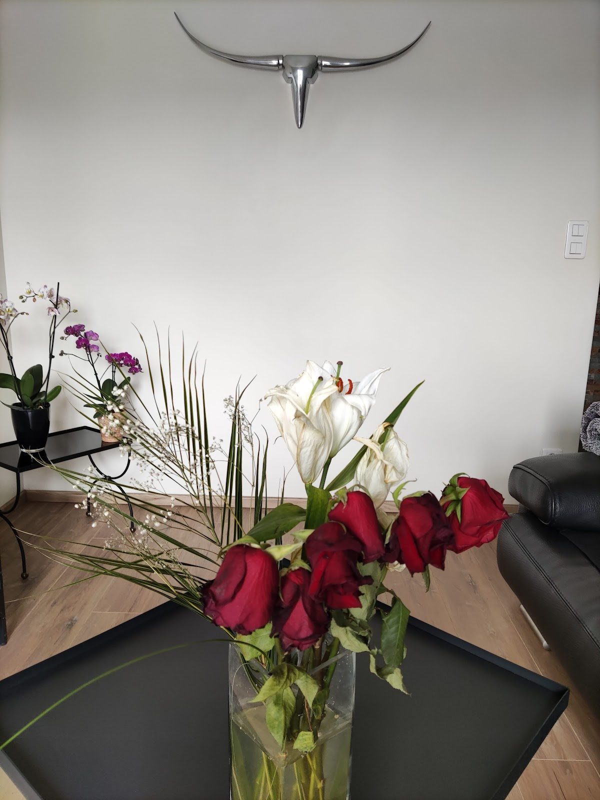
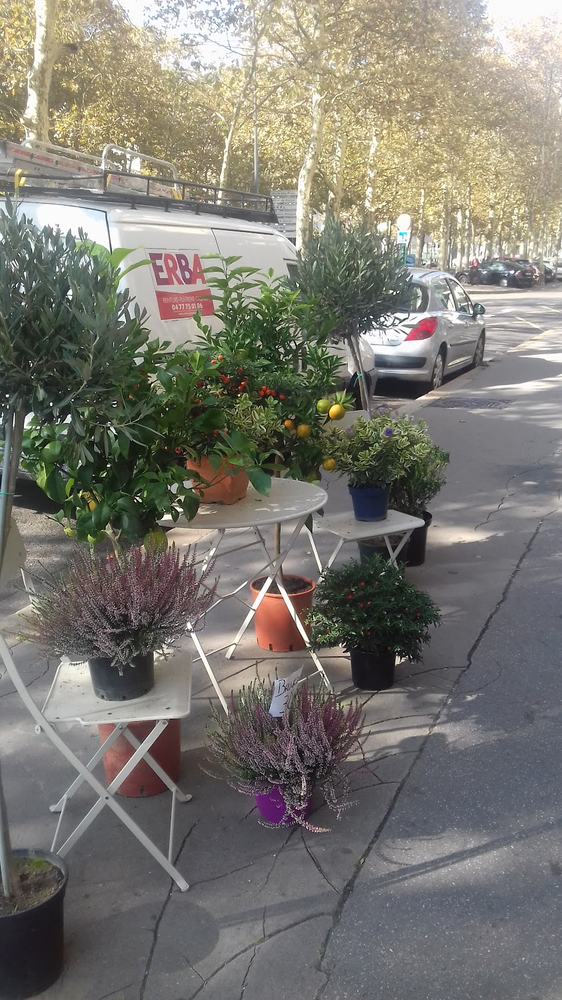
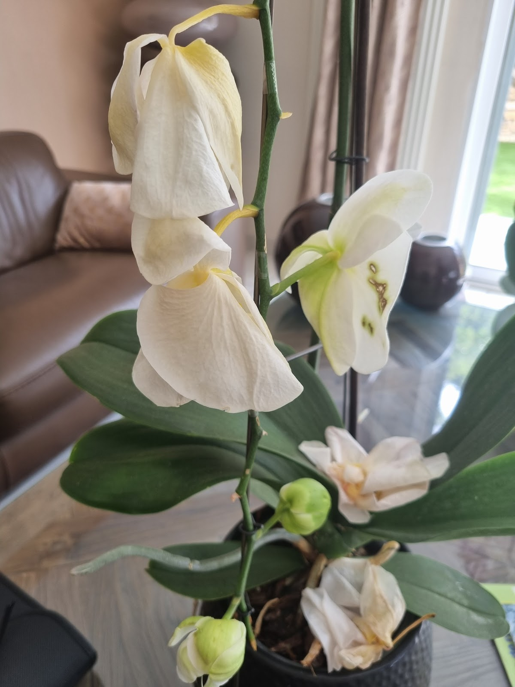
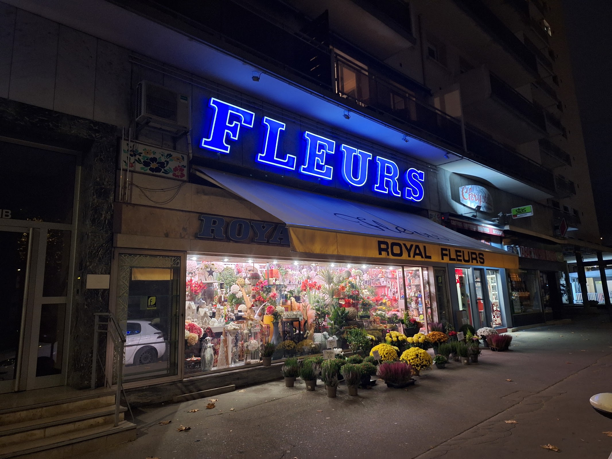

Bouquets fleuris
Des bouquets pour offrir une attention fleurie, à découvrir directement en boutique selon les fleurs disponibles.
Fleuriste · Saint-Étienne
Royal Fleurs vous accueille au 111 Cours Fauriel, au cœur de Saint-Étienne, pour découvrir fleurs, bouquets et roses en boutique.
Sur le Cours Fauriel, Royal Fleurs propose un univers de fleurs visible dès la vitrine. Pour une attention, un bouquet ou quelques roses, la boutique permet de choisir directement sur place.
Voir les horaires →Des bouquets pour offrir une attention fleurie, à découvrir directement en boutique selon les fleurs disponibles.
Roses et fleurs à choisir sur place pour composer une attention simple ou compléter un bouquet.

Une sélection florale présentée en vitrine et en boutique au 111 Cours Fauriel à Saint-Étienne.


Une présence fleurie
sur le Cours Fauriel.
Une sélection de photos issues de la fiche Google Business Profile de l’établissement.

Bonjour,
Jour de fête des grands mère, petite attention de ma part en voulant acheter un bouquet de fleurs. Et bein voilà pour 5 fleurs simple jaune violet rose 35€ !!
La fête des grands mère a bon dos
Aucun prix d’afficher dans le magasin
La dernière fois 3 rose 30€
Super chère à fuire
Allez à monthieu c’est moin chère et de meilleur qualité
Expérience désastreuse chez ce fleuriste. Je demande un bouquet de fleurs avec une facture (paiement professionnel). Je suis face à une vendeuse agacée qui m’explique qu’elle fait un remplacement, que son patron de 75 ans ne fournit pas de facture même à la main et que son tampon d’entreprise ne marche pas. Je lui explique calmement que c’est une obligation de fournir une facture après un achat, surtout dans le cadre d’un paiement professionnel avec nécessité de présenter un justificatif, c’est la loi. Elle saisit une feuille blanche, colle un autocollant dessus et gribouille un prix TTC. Je n’ai jamais vu ça de ma vie. J’ai demandé à ce que le patron me rappelle, j’attends toujours. N’y allez pas et je confirme les autres avis : les fleurs sont en plus de mauvaise qualité. J’attends ma facture, le signalement est effectué.
Bonjour, je poste cet avis pour que ça puisse s’arranger, Ce n’est pas la première fois que je viens, malheureusement j’ai voulu donner la chance deux fois et les deux fois je suis tombé sur des fleurs qu’au bout même pas deux jours tombent et ne sont plus du tout joli ,pour un prix beaucoup plus cher que la moyenne à Saint-Étienne…. Pourtant, la vendeuse est adorable, il faudrait peut-être changer de marchandise ou quoi …
Bonjour,
Je suis venue ce matin à l'occasion de la fête des mères. Première et dernière fois que je viens ici, les prix sont honteux franchement. J'ai acheté 4 roses 34€ soit 8€50 la rose, c'est du vol !
Le commerçant a été accueillant mais à ce prix là je ne reviendrai pas.
Fuyez cette boutique, aucun prix affiché et ce n'est pas normal....ils se regardent entre eux pour mettre un prix à la tête du client. Les bouquets entre 40 et 120 euros, du jamais vue.... sachant que j'ai déjà fait des livraisons de fleurs et je connais bien les prix... arrêtez de voler les gens honte à vous.. je ne mettrai plus les pieds dans votre boutique remplie de fleurs défraîchies..soyez honnêtes vous verrez que vos n'aurez plus autant d'avis négatifs.
Déçue vraiment
Lundi — Dimanche
08:00 — 20:30
Aucun numéro de téléphone n’est renseigné sur la fiche fournie.
Lancer l'itinéraire ↗La boutique se situe au 111 Cr Fauriel 111 B, 42100 Saint-Étienne. Le bouton « Itinéraire » ouvre directement Google Maps avec cette adresse comme destination.
Les horaires fournis sur la fiche Google sont 08:00–20:30 du lundi au dimanche.
Les informations publiques fournies mentionnent des achats de bouquets, de roses et de fleurs. Le choix précis dépend naturellement de ce qui est disponible en boutique au moment de votre visite.
Aucun numéro de téléphone n’est renseigné dans les informations fournies pour cette maquette. Le moyen de contact mis en avant ici est donc la visite en boutique via l’itinéraire Google Maps.
Oui. Les photographies affichées dans cette démonstration proviennent de la fiche Google Business Profile publique associée à Royal Fleurs.
La section « Avis Google » reprend les cinq verbatims fournis pour la démonstration. Le lien « Voir la fiche Google » permet d’ouvrir directement la fiche publique de l’établissement.